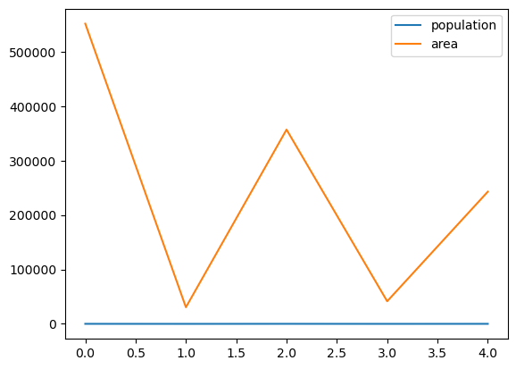
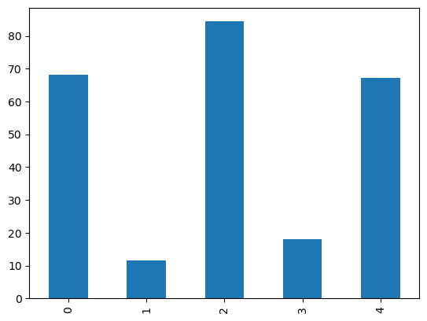
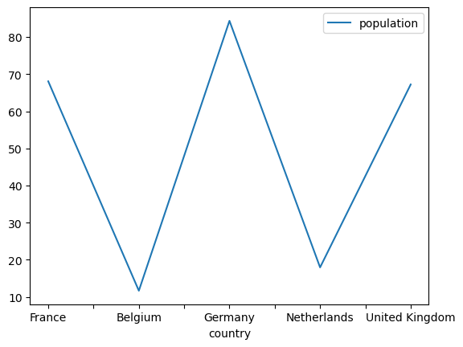
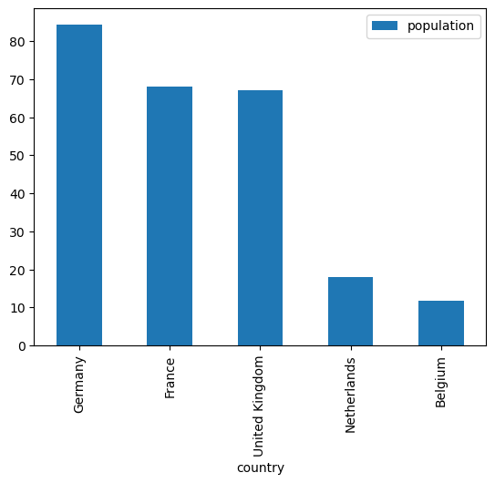

Python: Pandas
Objectif de cette section
L’un des facteurs de succès de Python résident dans ses bibliothèques spécialisées.
L’objectif de cette section est de se familiariser avec la bibliothèque du language Python ``Pandas``.
Parmi les sources ayant servi à réaliser ce document:
Wes McKinney’s book “Python for Data Analysis” O’REILLY. Licensed under CC BY 4.0 Creative Commons
Python pour le Data Scientist - Emmanuel Jakobowicz
Ce document sera rédigé en français et en anglais. We apologize for the inconvenience.
Data Analysis with Pandas
Pandas est particulièrement utile pour les tâches suivantes :
Nettoyage et préparation des données : Pandas fournit des fonctions pour gérer les valeurs manquantes, supprimer les doublons, filtrer et trier les données, etc.
Manipulation de données tabulaires : Pandas fournit des fonctions pour fusionner, joindre, pivoter et agréger des données tabulaires.
Analyse de séries temporelles : Pandas fournit des fonctions pour gérer les séries temporelles, telles que le rééchantillonnage, l’interpolation et le calcul de statistiques descriptives.
Visualisation de données : Bien que Pandas ne soit pas principalement conçu pour la visualisation de données, il fournit des fonctions de base pour tracer des graphiques à partir de données dans des DataFrame et des Series. Il est également facile d’intégrer Pandas avec d’autres bibliothèques de visualisation de données, telles que Matplotlib et Seaborn.
Importer le package Pandas
Pandas provides two fundamental data objects, for 1D (Series) and 2D data (DataFrame).
[2]:
# THE standard way of importing pandas
import pandas as pd
[4]:
pd?
Type: module
String form: <module 'pandas' from '/opt/anaconda3/lib/python3.11/site-packages/pandas/__init__.py'>
File: /opt/anaconda3/lib/python3.11/site-packages/pandas/__init__.py
Docstring:
pandas - a powerful data analysis and manipulation library for Python
=====================================================================
**pandas** is a Python package providing fast, flexible, and expressive data
structures designed to make working with "relational" or "labeled" data both
easy and intuitive. It aims to be the fundamental high-level building block for
doing practical, **real world** data analysis in Python. Additionally, it has
the broader goal of becoming **the most powerful and flexible open source data
analysis / manipulation tool available in any language**. It is already well on
its way toward this goal.
Main Features
-------------
Here are just a few of the things that pandas does well:
- Easy handling of missing data in floating point as well as non-floating
point data.
- Size mutability: columns can be inserted and deleted from DataFrame and
higher dimensional objects
- Automatic and explicit data alignment: objects can be explicitly aligned
to a set of labels, or the user can simply ignore the labels and let
`Series`, `DataFrame`, etc. automatically align the data for you in
computations.
- Powerful, flexible group by functionality to perform split-apply-combine
operations on data sets, for both aggregating and transforming data.
- Make it easy to convert ragged, differently-indexed data in other Python
and NumPy data structures into DataFrame objects.
- Intelligent label-based slicing, fancy indexing, and subsetting of large
data sets.
- Intuitive merging and joining data sets.
- Flexible reshaping and pivoting of data sets.
- Hierarchical labeling of axes (possible to have multiple labels per tick).
- Robust IO tools for loading data from flat files (CSV and delimited),
Excel files, databases, and saving/loading data from the ultrafast HDF5
format.
- Time series-specific functionality: date range generation and frequency
conversion, moving window statistics, date shifting and lagging.
[13]:
# Dans cette section nous utliserons également NumPy
import numpy as np
Data structures
Pandas provides two fundamental data objects, for 1D (Series) and 2D data (DataFrame).
Series: Uni-dimensional Data
Une série est un conteneur de base pour des données étiquetées à une dimension. Elle peut être créée de la même manière qu’un tableau NumPy:
[14]:
s = pd.Series([0.1, 0.2, 0.3, 0.4])
s
[14]:
0 0.1
1 0.2
2 0.3
3 0.4
dtype: float64
[15]:
type(s)
[15]:
pandas.core.series.Series
Attributs des Series: index et values
The series has a built-in concept of an index, which by default is the numbers 0 through N - 1
[16]:
s.index
[16]:
RangeIndex(start=0, stop=4, step=1)
You can access the underlying numpy array representation with the .values attribute:
[17]:
s.values
[17]:
array([0.1, 0.2, 0.3, 0.4])
[18]:
type(s.values)
[18]:
numpy.ndarray
We can access series values via the index, just like for NumPy arrays:
[19]:
s[0]
[19]:
0.1
Contrairement aux tableaux the NumPy, ces indexes peuvent être quelque chose d’autre que des entiers:
[20]:
s2 = pd.Series(range(4), index=['a', 'b', 'c', 'd'])
s2
[20]:
a 0
b 1
c 2
d 3
dtype: int64
[21]:
s2['c']
[21]:
2
Exercice:
Créer une pd.Series contenant 10 entiers choisis aléatoirement de 0 à 9Indexer la pd.Series avec les 10 premières lettres de l’alphabet.Sélectionner les 5 premiers indices
SOLUTION
[22]:
x = np.random.randint(1,10,size=10)
s = pd.Series(x)
s.index = ['a','b','c','d','e','f','g','h','i','j']
s
[22]:
a 8
b 9
c 2
d 1
e 3
f 9
g 2
h 6
i 5
j 1
dtype: int64
Pandas Series versus dictionaries
Un objet Series peut être considéré comme proche d’un dictionnaire ordonné mappant une valeur typée à une autre valeur typée.
Il est possible de construire une série directement à partir d’un dictionnaire Python:
[23]:
pop_dict = {'Germany': 81.3,
'Belgium': 11.3,
'France': 64.3,
'United Kingdom': 64.9,
'Netherlands': 16.9}
population = pd.Series(pop_dict)
population
[23]:
Germany 81.3
Belgium 11.3
France 64.3
United Kingdom 64.9
Netherlands 16.9
dtype: float64
Exercice:
Afficher les indices de la pd.Series “population”:Index([‘Germany’, ‘Belgium’, ‘France’, ‘United Kingdom’,’Netherlands’], dtype=’object’)
Puis afficher ensuite les valeurs de cette pd.Series:array([81.3, 11.3, 64.3, 64.9, 16.9])
SOLUTION
[48]:
population.index
[48]:
Index(['Germany', 'Belgium', 'France', 'United Kingdom', 'Netherlands'], dtype='object')
[49]:
population.values
[49]:
array([81.3, 11.3, 64.3, 64.9, 16.9])
Nous pouvons indicer les populations comme cela serait attendu par un dictionnaire:
[25]:
population['France'], pop_dict['France']
[25]:
(64.3, 64.3)
mais avec le pouvoir d’un numpy arrays:
[26]:
population.values * 1000
[26]:
array([81300., 11300., 64300., 64900., 16900.])
[27]:
population.dtype
[27]:
dtype('float64')
DataFrames: Multi-dimensional Data
Chaque ligne représente une observation et chaque colonne une variable.
Exemples de DataFrames :
Un tableau de données de ventes, avec une ligne pour chaque vente et des colonnes pour le produit vendu, le prix de vente et la quantité vendue.
Un tableau de données de patients, avec une ligne pour chaque patient et des colonnes pour le nom, l’âge et la maladie.
A DataFrame is a tablular data structure (multi-dimensional object to hold labeled data) comprised of rows and columns, akin to a spreadsheet, database table, CSV files, Excel files or R’s data.frame object. You can think of it as multiple Series object which share the same index. Each row represents an observation and each column a variable.
They are used to perform data analysis operations, such as joins, sorting, filtering, and visualization. These additional features beyond those of Numpy.array() make them more suitable for data analysis.
Examples of DataFrames:
A sales data table, with one row for each sale and columns for the product sold, the sale price, and the quantity sold.
A patient data table, with one row for each patient and columns for the name, age, and disease.
Illustration
[28]:
## Neither a module, nor a function but a DataFrame object.
pd.DataFrame?
Init signature:
pd.DataFrame(
data=None,
index: 'Axes | None' = None,
columns: 'Axes | None' = None,
dtype: 'Dtype | None' = None,
copy: 'bool | None' = None,
) -> 'None'
Docstring:
Two-dimensional, size-mutable, potentially heterogeneous tabular data.
Data structure also contains labeled axes (rows and columns).
Arithmetic operations align on both row and column labels. Can be
thought of as a dict-like container for Series objects. The primary
pandas data structure.
Parameters
----------
data : ndarray (structured or homogeneous), Iterable, dict, or DataFrame
Dict can contain Series, arrays, constants, dataclass or list-like objects. If
data is a dict, column order follows insertion-order. If a dict contains Series
which have an index defined, it is aligned by its index. This alignment also
occurs if data is a Series or a DataFrame itself. Alignment is done on
Series/DataFrame inputs.
If data is a list of dicts, column order follows insertion-order.
index : Index or array-like
Index to use for resulting frame. Will default to RangeIndex if
no indexing information part of input data and no index provided.
columns : Index or array-like
Column labels to use for resulting frame when data does not have them,
defaulting to RangeIndex(0, 1, 2, ..., n). If data contains column labels,
will perform column selection instead.
dtype : dtype, default None
Data type to force. Only a single dtype is allowed. If None, infer.
copy : bool or None, default None
Copy data from inputs.
For dict data, the default of None behaves like ``copy=True``. For DataFrame
or 2d ndarray input, the default of None behaves like ``copy=False``.
If data is a dict containing one or more Series (possibly of different dtypes),
``copy=False`` will ensure that these inputs are not copied.
.. versionchanged:: 1.3.0
See Also
--------
DataFrame.from_records : Constructor from tuples, also record arrays.
DataFrame.from_dict : From dicts of Series, arrays, or dicts.
read_csv : Read a comma-separated values (csv) file into DataFrame.
read_table : Read general delimited file into DataFrame.
read_clipboard : Read text from clipboard into DataFrame.
Notes
-----
Please reference the :ref:`User Guide <basics.dataframe>` for more information.
Examples
--------
Constructing DataFrame from a dictionary.
>>> d = {'col1': [1, 2], 'col2': [3, 4]}
>>> df = pd.DataFrame(data=d)
>>> df
col1 col2
0 1 3
1 2 4
Notice that the inferred dtype is int64.
>>> df.dtypes
col1 int64
col2 int64
dtype: object
To enforce a single dtype:
>>> df = pd.DataFrame(data=d, dtype=np.int8)
>>> df.dtypes
col1 int8
col2 int8
dtype: object
Constructing DataFrame from a dictionary including Series:
>>> d = {'col1': [0, 1, 2, 3], 'col2': pd.Series([2, 3], index=[2, 3])}
>>> pd.DataFrame(data=d, index=[0, 1, 2, 3])
col1 col2
0 0 NaN
1 1 NaN
2 2 2.0
3 3 3.0
Constructing DataFrame from numpy ndarray:
>>> df2 = pd.DataFrame(np.array([[1, 2, 3], [4, 5, 6], [7, 8, 9]]),
... columns=['a', 'b', 'c'])
>>> df2
a b c
0 1 2 3
1 4 5 6
2 7 8 9
Constructing DataFrame from a numpy ndarray that has labeled columns:
>>> data = np.array([(1, 2, 3), (4, 5, 6), (7, 8, 9)],
... dtype=[("a", "i4"), ("b", "i4"), ("c", "i4")])
>>> df3 = pd.DataFrame(data, columns=['c', 'a'])
...
>>> df3
c a
0 3 1
1 6 4
2 9 7
Constructing DataFrame from dataclass:
>>> from dataclasses import make_dataclass
>>> Point = make_dataclass("Point", [("x", int), ("y", int)])
>>> pd.DataFrame([Point(0, 0), Point(0, 3), Point(2, 3)])
x y
0 0 0
1 0 3
2 2 3
Constructing DataFrame from Series/DataFrame:
>>> ser = pd.Series([1, 2, 3], index=["a", "b", "c"])
>>> df = pd.DataFrame(data=ser, index=["a", "c"])
>>> df
0
a 1
c 3
>>> df1 = pd.DataFrame([1, 2, 3], index=["a", "b", "c"], columns=["x"])
>>> df2 = pd.DataFrame(data=df1, index=["a", "c"])
>>> df2
x
a 1
c 3
File: /opt/anaconda3/lib/python3.11/site-packages/pandas/core/frame.py
Type: type
Subclasses: SubclassedDataFrame
[30]:
# Utiliser un vecteur pour créer un dataframe:
vecteur = np.random.randint(0,1100,size=(10,1))
df = pd.DataFrame(vecteur, columns=['A'])
df
[30]:
| A | |
|---|---|
| 0 | 428 |
| 1 | 646 |
| 2 | 755 |
| 3 | 945 |
| 4 | 575 |
| 5 | 178 |
| 6 | 851 |
| 7 | 1076 |
| 8 | 766 |
| 9 | 159 |
Exercice:
Créer un DataFrame avec deux colonnes A et B contenant chacune 10 chiffres aléatoires entiers
SOLUTION
[57]:
# Utiliser un vecteur pour créer un dataframe:
vecteur = np.random.randint(0,1100,size=(10, 2))
df = pd.DataFrame(vecteur, columns=['A','B'])
df
[57]:
| A | B | |
|---|---|---|
| 0 | 231 | 103 |
| 1 | 317 | 342 |
| 2 | 418 | 555 |
| 3 | 1035 | 787 |
| 4 | 849 | 905 |
| 5 | 744 | 308 |
| 6 | 188 | 519 |
| 7 | 317 | 891 |
| 8 | 521 | 35 |
| 9 | 315 | 672 |
Bien que similaires, les tableaux de NumPy et les DataFrames de Pandas présentent des différences :
Homogénéité
Les tableaux de NumPy sont homogènes, ce qui signifie que tous les éléments d’un tableau doivent être du même type. Les DataFrames, en revanche, sont hétérogènes, ce qui signifie que les colonnes peuvent contenir des données de types différents.
Indexation
Les tableaux de NumPy sont indexés par des indices entiers. Les DataFrames, en revanche, peuvent être indexés par des indices entiers ou par des étiquettes de colonne.
Fonctionnalités
Les tableaux de NumPy sont optimisés pour les calculs numériques. Ils offrent une large gamme de fonctions pour effectuer des opérations mathématiques, telles que l’addition, la multiplication et la soustraction. Les DataFrames sont optimisés pour l’analyse de données. Ils offrent une large gamme de fonctions pour effectuer des opérations d’analyse de données, telles que la jointure, le tri, le filtrage et la visualisation.
Although similar, NumPy’s Array and Pandas’ DataFrame arrays differ:
Homogeneity
NumPy arrays are homogeneous, meaning that all elements of an array must be of the same type. DataFrames, on the other hand, are heterogeneous, meaning that columns can contain data of different types.
Indexing
NumPy arrays are indexed by integer indices. DataFrames, on the other hand, can be indexed by integer indices or by column labels.
Functionality
NumPy tables are optimized for numerical calculations. They offer a wide range of functions for performing mathematical operations, such as addition, multiplication and subtraction. DataFrames are optimized for data analysis. They offer a wide range of functions for performing data analysis operations, such as joining, sorting, filtering and visualization.
DataFrames can be created in a number of ways_ :
The pd.DataFrame() function, which takes a NumPy array or list of lists as argument.
The pd.read_csv() function, which reads a CSV file and returns a DataFrame.
The pd.read_excel() function, which reads an Excel file and returns a DataFrame.
DataFrames are a powerful and versatile (flexible and adaptable) data structure used by data scientists and analysts the world over. In fact, they are more suitable than Numpy tables for the latter.
Les DataFrames peuvent être créés de plusieurs manières :
La fonction pd.DataFrame(), qui prend en argument un tableau NumPy ou une liste de listes.
La fonction pd.read_csv(), qui lit un fichier CSV et renvoie un DataFrame.
La fonction pd.read_excel(), qui lit un fichier Excel et renvoie un DataFrame.
Les DataFrames sont une structure de données puissante et polyvalente (souple et adaptable) utilisée par les scientifiques et les analystes de données du monde entier. En fait, ils sont plus adaptés que les tableaux NumPy pour ces derniers.
pd.DataFrame(dict)
One of the most common ways of creating a dataframe is from a dictionary of arrays or lists.
[32]:
last_name = ['Doe', 'Hawkis', 'Ewing']
first_name = ['John', 'Patrick', 'Bob']
age = [52, 28, 60]
[33]:
dico = {'prénom' : first_name,
'nom': last_name,
'age': age}
dico
[33]:
{'prénom': ['John', 'Patrick', 'Bob'],
'nom': ['Doe', 'Hawkis', 'Ewing'],
'age': [52, 28, 60]}
[34]:
pd.DataFrame(dico)
[34]:
| prénom | nom | age | |
|---|---|---|---|
| 0 | John | Doe | 52 |
| 1 | Patrick | Hawkis | 28 |
| 2 | Bob | Ewing | 60 |
Exercice:
Créer le pd.DataFrame suivant en utilisant un dictionnaire:
country |
pop. (millions) |
area (km2) |
capital |
|---|---|---|---|
France |
68.07 |
551 695 |
Paris |
Belgium |
11.68 |
30 528 |
Brussels |
Germany |
84.36 |
357 022 |
Berlin |
Netherlands |
17.96 |
41 526 |
Amsterdam |
United Kingdom |
67.22 |
242 900 |
London |
SOLUTION:
[49]:
dico = {'country': ['France', 'Belgium', 'Germany', 'Netherlands', 'United Kingdom'],
'pop. (millions)': [68.07, 11.68, 84.36, 17.96, 67.22],
'area (km2)': [551695, 30528, 357022, 41526, 242900],
'capital': ['Paris', 'Brussels', 'Berlin', 'Amsterdam', 'London']}
countries = pd.DataFrame(dico)
countries
[49]:
| country | pop. (millions) | area (km2) | capital | |
|---|---|---|---|---|
| 0 | France | 68.07 | 551695 | Paris |
| 1 | Belgium | 11.68 | 30528 | Brussels |
| 2 | Germany | 84.36 | 357022 | Berlin |
| 3 | Netherlands | 17.96 | 41526 | Amsterdam |
| 4 | United Kingdom | 67.22 | 242900 | London |
DataFrames data can be heterogeneous (different data types) such as numbers, strings, booleans…This property makes DataFrames different of numpy.array().
[50]:
type(countries)
[50]:
pandas.core.frame.DataFrame
[51]:
type(countries['area (km2)'])
[51]:
pandas.core.series.Series
[52]:
type(countries['country'])
[52]:
pandas.core.series.Series
Attributs of the DataFrame
Un DataFrame possède, en plus d’un attribut index, également un attribut columns :
A DataFrame has besides an index attribute, also a columns attribute:
[53]:
countries.index
[53]:
RangeIndex(start=0, stop=5, step=1)
[54]:
countries.columns
[54]:
Index(['country', 'pop. (millions)', 'area (km2)', 'capital'], dtype='object')
[55]:
type(countries.columns)
[55]:
pandas.core.indexes.base.Index
dtypes to check the data types of the different columns:
[56]:
countries.dtypes
[56]:
country object
pop. (millions) float64
area (km2) int64
capital object
dtype: object
The shape (number of rows, number of columns) of the DataFrame
[57]:
countries.shape
[57]:
(5, 4)
An overview of that information can be given with the info() method:
[58]:
countries.info()
<class 'pandas.core.frame.DataFrame'>
RangeIndex: 5 entries, 0 to 4
Data columns (total 4 columns):
# Column Non-Null Count Dtype
--- ------ -------------- -----
0 country 5 non-null object
1 pop. (millions) 5 non-null float64
2 area (km2) 5 non-null int64
3 capital 5 non-null object
dtypes: float64(1), int64(1), object(2)
memory usage: 292.0+ bytes
Also a DataFrame has a values attribute, but attention: when you have heterogeneous data in a column, all values will be upcasted (meaning converted into the largest data type. If you have a column mixing float and int all the columns will be converted into float or if you create a column from int and float64, the resulting column will be float64). Upcasting guarantees the consistency during the data manipulation.
[59]:
countries.values
[59]:
array([['France', 68.07, 551695, 'Paris'],
['Belgium', 11.68, 30528, 'Brussels'],
['Germany', 84.36, 357022, 'Berlin'],
['Netherlands', 17.96, 41526, 'Amsterdam'],
['United Kingdom', 67.22, 242900, 'London']], dtype=object)
To access a Series representing a column in the data, use typical indexing syntax:
[60]:
countries['area (km2)']
[60]:
0 551695
1 30528
2 357022
3 41526
4 242900
Name: area (km2), dtype: int64
Changing the DataFrame index
Changer les indices d’un DataFrame
[61]:
countries
[61]:
| country | pop. (millions) | area (km2) | capital | |
|---|---|---|---|---|
| 0 | France | 68.07 | 551695 | Paris |
| 1 | Belgium | 11.68 | 30528 | Brussels |
| 2 | Germany | 84.36 | 357022 | Berlin |
| 3 | Netherlands | 17.96 | 41526 | Amsterdam |
| 4 | United Kingdom | 67.22 | 242900 | London |
[62]:
countries.index
[62]:
RangeIndex(start=0, stop=5, step=1)
If we don’t like what the index looks like, we can reset it and set one of our columns set_index:
[63]:
countries = countries.set_index('country')
countries
[63]:
| pop. (millions) | area (km2) | capital | |
|---|---|---|---|
| country | |||
| France | 68.07 | 551695 | Paris |
| Belgium | 11.68 | 30528 | Brussels |
| Germany | 84.36 | 357022 | Berlin |
| Netherlands | 17.96 | 41526 | Amsterdam |
| United Kingdom | 67.22 | 242900 | London |
[66]:
countries.index
[66]:
Index(['France', 'Belgium', 'Germany', 'Netherlands', 'United Kingdom'], dtype='object', name='country')
[67]:
countries.index.name
[67]:
'country'
Reversing this operation, is reset_index:
[68]:
countries = countries.reset_index('country')
countries
[68]:
| country | pop. (millions) | area (km2) | capital | |
|---|---|---|---|---|
| 0 | France | 68.07 | 551695 | Paris |
| 1 | Belgium | 11.68 | 30528 | Brussels |
| 2 | Germany | 84.36 | 357022 | Berlin |
| 3 | Netherlands | 17.96 | 41526 | Amsterdam |
| 4 | United Kingdom | 67.22 | 242900 | London |
Some useful methods on these data structures
Importing and exporting data
A wide range of input/output formats are natively supported by pandas:
CSV, text
SQL database
Excel
HDF5
json
html
pickle
…
[88]:
# Exporting the DataFrame into a .csv file in the present working directory
countries.to_csv('countries.csv', sep=';')
[89]:
!cat countries.csv
;country;population;area;capital
0;France;68.07;551695;Paris
1;Belgium;11.68;30528;Brussels
2;Germany;84.36;357022;Berlin
3;Netherlands;17.96;41526;Amsterdam
4;United Kingdom;67.22;242900;London
Chargements de fichiers provenant d’URL (Uniform Ressource Locator)
[234]:
url = "https://gist.githubusercontent.com/bobbyhadz/9061dd50a9c0d9628592b156326251ff/raw/381229ffc3a72c04066397c948cf386e10c98bee/employees.csv"
data = pd.read_csv(url, sep=',', encoding='utf-8')
[235]:
data.head()
[235]:
| first_name | last_name | date | |
|---|---|---|---|
| 0 | Alice | Smith | 2023-01-05 |
| 1 | Bobby | Hadz | 2023-03-25 |
| 2 | Carl | Lemon | 2021-01-24 |
Voici une description des colonnes du jeu de données :
DW Code : le code du warrant.
Issuer : le nom de l’émetteur du warrant.
UL : le nom de l’actif sous-jacent du warrant (par exemple, une action ou un indice boursier).
Call/Put : le type de warrant (Call ou Put). Un warrant Call donne le droit (mais pas l’obligation) à son détenteur d’acheter l’actif sous-jacent à un prix prédéfini (le prix d’exercice) avant une date d’échéance. Un warrant Put donne le droit (mais pas l’obligation) de vendre l’actif sous-jacent à un prix prédéfini avant une date d’échéance.
DW Type : le type de warrant (par exemple, vanille, turbo, etc.).
Listing : la date de cotation du warrant à la Bourse de Hong Kong.
Maturity : la date d’échéance du warrant.
Strike Currency : la devise dans laquelle le prix d’exercice est exprimé.
Strike : le prix d’exercice du warrant.
Entitlement Ratio : le rapport d’exercice du warrant, qui indique le nombre d’actions sous-jacentes que le détenteur du warrant a le droit d’acheter ou de vendre pour chaque warrant détenu.
O/S (%) : le pourcentage de warrants en circulation par rapport au nombre total de warrants émis.
Delta (%) : la sensibilité du prix du warrant par rapport à une variation du prix de l’actif sous-jacent. Le delta est exprimé en pourcentage et varie entre 0 et 1 pour un warrant Call, et entre -1 et 0 pour un warrant Put.
IV. (%) : la volatilité implicite du warrant, qui mesure la volatilité attendue du prix de l’actif sous-jacent. La volatilité implicite est exprimée en pourcentage.
Trading Currency : la devise dans laquelle le warrant est négocié à la Bourse de Hong Kong.
Day High : le cours le plus haut atteint par le warrant pendant la séance de bourse.
Day Low : le cours le plus bas atteint par le warrant pendant la séance de bourse.
Closing Price : le cours de clôture du warrant à la fin de la séance de bourse.
T/O (‘000) : le volume de transactions du warrant pendant la séance de bourse, exprimé en milliers de warrants échangés.
UL Currency : la devise dans laquelle l’actif sous-jacent est coté.
UL Price : le cours de clôture de l’actif sous-jacent à la fin de la séance de bourse.
Chargement du fichier des warrants de la bourse de Hong-Kong (HKEX)
[236]:
url = 'https://www.hkex.com.hk/eng/dwrc/search/dwFullList.csv'
df = pd.read_csv(url, encoding = 'utf-16', sep = '\t', skiprows = 1, skipfooter = 3, engine = 'python')
df.head()
[236]:
| DW Code | Issuer | UL | Call/Put | DW Type | Listing | Maturity | Strike Currency | Strike | Entitlement Ratio^ | Total Issue Size | O/S (%) | Delta (%) | IV. (%) | Trading Currency | Day High | Day Low | Closing Price | T/O ('000) | UL Currency | UL Price | |
|---|---|---|---|---|---|---|---|---|---|---|---|---|---|---|---|---|---|---|---|---|---|
| 10002 | GS | DJI | Put | Standard | 14-08-2023 | 20-09-2024 | - | 30000.0 | 58000.0 | 100,000,000 | 19.79 | (0.000) | 27.861 | HKD | 0.011 | 0.011 | 0.011 | 3 | - | - | NaN |
| 10007 | JP | DJI | Put | Standard | 18-08-2023 | 20-09-2024 | - | 29850.0 | 58000.0 | 150,000,000 | 35.93 | (0.000) | 27.792 | HKD | 0.000 | 0.000 | 0.010 | 0 | - | - | NaN |
| 10012 | UB | NIK | Put | Standard | 22-08-2023 | 14-06-2024 | - | 33000.0 | 800.0 | 100,000,000 | 20.52 | (0.010) | 48.045 | HKD | 0.000 | 0.000 | 0.010 | 0 | - | - | NaN |
| 10013 | UB | NIK | Put | Standard | 22-08-2023 | 14-06-2024 | - | 30000.0 | 550.0 | 100,000,000 | 3.63 | (0.008) | 64.337 | HKD | 0.000 | 0.000 | 0.010 | 0 | - | - | NaN |
| 10014 | UB | NIK | Put | Standard | 22-08-2023 | 14-06-2024 | - | 27860.0 | 550.0 | 100,000,000 | 5.13 | (0.006) | 79.627 | HKD | 0.000 | 0.000 | 0.010 | 0 | - | - | NaN |
[99]:
df.shape
[99]:
(5297, 21)
[187]:
# Définir le nombre maximal de lignes à afficher (ici 200)
pd.set_option('display.max_rows', 200)
# Définir le nombre maximal de colonnes à afficher (ici 200)
pd.set_option('display.max_columns', 200)
Des méthodes utiles
Ci-après une liste non exhaustive de méthodes utiles sur ces structures de données
Exploration of the Series and DataFrame is essential (check out what you’re dealing with).
head()
[ ]:
# Top 2 first rows
countries.head(2)
| country | pop. (millions) | area (km2) | capital | |
|---|---|---|---|---|
| 0 | France | 68.07 | 551695 | Paris |
| 1 | Belgium | 11.68 | 30528 | Brussels |
tail()
[ ]:
# Bottom 2 last rows
countries.tail(2)
| country | pop. (millions) | area (km2) | capital | |
|---|---|---|---|---|
| 3 | Netherlands | 17.96 | 41526 | Amsterdam |
| 4 | United Kingdom | 67.22 | 242900 | London |
rename()
Rename a colonne
[ ]:
countries = countries.rename(columns={'pop. (millions)': 'population'})
[ ]:
countries
| country | population | area (km2) | capital | |
|---|---|---|---|---|
| 0 | France | 68.07 | 551695 | Paris |
| 1 | Belgium | 11.68 | 30528 | Brussels |
| 2 | Germany | 84.36 | 357022 | Berlin |
| 3 | Netherlands | 17.96 | 41526 | Amsterdam |
| 4 | United Kingdom | 67.22 | 242900 | London |
Exercice: > Modifier le nom de la colonne ‘area (km2)’ en ‘area’
[ ]:
countries = countries.rename(columns={'area (km2)': 'area'})
countries
| country | population | area | capital | |
|---|---|---|---|---|
| 0 | France | 68.07 | 551695 | Paris |
| 1 | Belgium | 11.68 | 30528 | Brussels |
| 2 | Germany | 84.36 | 357022 | Berlin |
| 3 | Netherlands | 17.96 | 41526 | Amsterdam |
| 4 | United Kingdom | 67.22 | 242900 | London |
Nb: nécessité de “columns=” à l’intérieur des acolades!
Descriptive Analysis (pd.Dataframe()
One useful method to use is the ``describe`` method, which computes summary statistics for each column:
[ ]:
countries.describe()
| population | area | |
|---|---|---|
| count | 5.000000 | 5.000000 |
| mean | 49.858000 | 244734.200000 |
| std | 32.781649 | 220235.507878 |
| min | 11.680000 | 30528.000000 |
| 25% | 17.960000 | 41526.000000 |
| 50% | 67.220000 | 242900.000000 |
| 75% | 68.070000 | 357022.000000 |
| max | 84.360000 | 551695.000000 |
[ ]:
countries.describe(include='all')
| country | population | area | capital | |
|---|---|---|---|---|
| count | 5 | 5.000000 | 5.000000 | 5 |
| unique | 5 | NaN | NaN | 5 |
| top | France | NaN | NaN | Paris |
| freq | 1 | NaN | NaN | 1 |
| mean | NaN | 49.858000 | 244734.200000 | NaN |
| std | NaN | 32.781649 | 220235.507878 | NaN |
| min | NaN | 11.680000 | 30528.000000 | NaN |
| 25% | NaN | 17.960000 | 41526.000000 | NaN |
| 50% | NaN | 67.220000 | 242900.000000 | NaN |
| 75% | NaN | 68.070000 | 357022.000000 | NaN |
| max | NaN | 84.360000 | 551695.000000 | NaN |
Descriptive statistics mean(), std(), sum()
mean(), std()
[ ]:
countries['area'].mean(), countries['area'].std()
(244734.2, 220235.50787781703)
min(), max()
[ ]:
countries['area'].min(), countries['area'].max()
(30528, 551695)
sum(), count()
[ ]:
countries['area'].sum(), countries['area'].count()
(1223671, 5)
[ ]:
countries.describe?
Signature: countries.describe(percentiles=None, include=None, exclude=None) -> 'Self'
Docstring:
Generate descriptive statistics.
Descriptive statistics include those that summarize the central
tendency, dispersion and shape of a
dataset's distribution, excluding ``NaN`` values.
Analyzes both numeric and object series, as well
as ``DataFrame`` column sets of mixed data types. The output
will vary depending on what is provided. Refer to the notes
below for more detail.
Parameters
----------
percentiles : list-like of numbers, optional
The percentiles to include in the output. All should
fall between 0 and 1. The default is
``[.25, .5, .75]``, which returns the 25th, 50th, and
75th percentiles.
include : 'all', list-like of dtypes or None (default), optional
A white list of data types to include in the result. Ignored
for ``Series``. Here are the options:
- 'all' : All columns of the input will be included in the output.
- A list-like of dtypes : Limits the results to the
provided data types.
To limit the result to numeric types submit
``numpy.number``. To limit it instead to object columns submit
the ``numpy.object`` data type. Strings
can also be used in the style of
``select_dtypes`` (e.g. ``df.describe(include=['O'])``). To
select pandas categorical columns, use ``'category'``
- None (default) : The result will include all numeric columns.
exclude : list-like of dtypes or None (default), optional,
A black list of data types to omit from the result. Ignored
for ``Series``. Here are the options:
- A list-like of dtypes : Excludes the provided data types
from the result. To exclude numeric types submit
``numpy.number``. To exclude object columns submit the data
type ``numpy.object``. Strings can also be used in the style of
``select_dtypes`` (e.g. ``df.describe(exclude=['O'])``). To
exclude pandas categorical columns, use ``'category'``
- None (default) : The result will exclude nothing.
Returns
-------
Series or DataFrame
Summary statistics of the Series or Dataframe provided.
See Also
--------
DataFrame.count: Count number of non-NA/null observations.
DataFrame.max: Maximum of the values in the object.
DataFrame.min: Minimum of the values in the object.
DataFrame.mean: Mean of the values.
DataFrame.std: Standard deviation of the observations.
DataFrame.select_dtypes: Subset of a DataFrame including/excluding
columns based on their dtype.
Notes
-----
For numeric data, the result's index will include ``count``,
``mean``, ``std``, ``min``, ``max`` as well as lower, ``50`` and
upper percentiles. By default the lower percentile is ``25`` and the
upper percentile is ``75``. The ``50`` percentile is the
same as the median.
For object data (e.g. strings or timestamps), the result's index
will include ``count``, ``unique``, ``top``, and ``freq``. The ``top``
is the most common value. The ``freq`` is the most common value's
frequency. Timestamps also include the ``first`` and ``last`` items.
If multiple object values have the highest count, then the
``count`` and ``top`` results will be arbitrarily chosen from
among those with the highest count.
For mixed data types provided via a ``DataFrame``, the default is to
return only an analysis of numeric columns. If the dataframe consists
only of object and categorical data without any numeric columns, the
default is to return an analysis of both the object and categorical
columns. If ``include='all'`` is provided as an option, the result
will include a union of attributes of each type.
The `include` and `exclude` parameters can be used to limit
which columns in a ``DataFrame`` are analyzed for the output.
The parameters are ignored when analyzing a ``Series``.
Examples
--------
Describing a numeric ``Series``.
>>> s = pd.Series([1, 2, 3])
>>> s.describe()
count 3.0
mean 2.0
std 1.0
min 1.0
25% 1.5
50% 2.0
75% 2.5
max 3.0
dtype: float64
Describing a categorical ``Series``.
>>> s = pd.Series(['a', 'a', 'b', 'c'])
>>> s.describe()
count 4
unique 3
top a
freq 2
dtype: object
Describing a timestamp ``Series``.
>>> s = pd.Series([
... np.datetime64("2000-01-01"),
... np.datetime64("2010-01-01"),
... np.datetime64("2010-01-01")
... ])
>>> s.describe()
count 3
mean 2006-09-01 08:00:00
min 2000-01-01 00:00:00
25% 2004-12-31 12:00:00
50% 2010-01-01 00:00:00
75% 2010-01-01 00:00:00
max 2010-01-01 00:00:00
dtype: object
Describing a ``DataFrame``. By default only numeric fields
are returned.
>>> df = pd.DataFrame({'categorical': pd.Categorical(['d','e','f']),
... 'numeric': [1, 2, 3],
... 'object': ['a', 'b', 'c']
... })
>>> df.describe()
numeric
count 3.0
mean 2.0
std 1.0
min 1.0
25% 1.5
50% 2.0
75% 2.5
max 3.0
Describing all columns of a ``DataFrame`` regardless of data type.
>>> df.describe(include='all') # doctest: +SKIP
categorical numeric object
count 3 3.0 3
unique 3 NaN 3
top f NaN a
freq 1 NaN 1
mean NaN 2.0 NaN
std NaN 1.0 NaN
min NaN 1.0 NaN
25% NaN 1.5 NaN
50% NaN 2.0 NaN
75% NaN 2.5 NaN
max NaN 3.0 NaN
Describing a column from a ``DataFrame`` by accessing it as
an attribute.
>>> df.numeric.describe()
count 3.0
mean 2.0
std 1.0
min 1.0
25% 1.5
50% 2.0
75% 2.5
max 3.0
Name: numeric, dtype: float64
Including only numeric columns in a ``DataFrame`` description.
>>> df.describe(include=[np.number])
numeric
count 3.0
mean 2.0
std 1.0
min 1.0
25% 1.5
50% 2.0
75% 2.5
max 3.0
Including only string columns in a ``DataFrame`` description.
>>> df.describe(include=[object]) # doctest: +SKIP
object
count 3
unique 3
top a
freq 1
Including only categorical columns from a ``DataFrame`` description.
>>> df.describe(include=['category'])
categorical
count 3
unique 3
top d
freq 1
Excluding numeric columns from a ``DataFrame`` description.
>>> df.describe(exclude=[np.number]) # doctest: +SKIP
categorical object
count 3 3
unique 3 3
top f a
freq 1 1
Excluding object columns from a ``DataFrame`` description.
>>> df.describe(exclude=[object]) # doctest: +SKIP
categorical numeric
count 3 3.0
unique 3 NaN
top f NaN
freq 1 NaN
mean NaN 2.0
std NaN 1.0
min NaN 1.0
25% NaN 1.5
50% NaN 2.0
75% NaN 2.5
max NaN 3.0
File: /opt/anaconda3/lib/python3.11/site-packages/pandas/core/generic.py
Type: method
Sorting your data by a specific column is another important first-check:
[ ]:
countries.sort_values(by='population')
| country | population | area | capital | |
|---|---|---|---|---|
| 1 | Belgium | 11.68 | 30528 | Brussels |
| 3 | Netherlands | 17.96 | 41526 | Amsterdam |
| 4 | United Kingdom | 67.22 | 242900 | London |
| 0 | France | 68.07 | 551695 | Paris |
| 2 | Germany | 84.36 | 357022 | Berlin |
Exercice:
Consulter l’aide sur la méthode ‘sort_values’ et trouver comment trier de la plus grande à la plus petite valeur de population
SOLUTION
[ ]:
countries.sort_values(by='population', ascending=False)
| country | population | area | capital | |
|---|---|---|---|---|
| 2 | Germany | 84.36 | 357022 | Berlin |
| 0 | France | 68.07 | 551695 | Paris |
| 4 | United Kingdom | 67.22 | 242900 | London |
| 3 | Netherlands | 17.96 | 41526 | Amsterdam |
| 1 | Belgium | 11.68 | 30528 | Brussels |
The ``plot`` method can be used to quickly visualize the data in different ways:
[ ]:
countries.plot()
<Axes: >

However, for this dataset, it does not say that much:
[ ]:
countries
| country | population | area | capital | |
|---|---|---|---|---|
| 0 | France | 68.07 | 551695 | Paris |
| 1 | Belgium | 11.68 | 30528 | Brussels |
| 2 | Germany | 84.36 | 357022 | Berlin |
| 3 | Netherlands | 17.96 | 41526 | Amsterdam |
| 4 | United Kingdom | 67.22 | 242900 | London |
[ ]:
countries['population'].plot(kind='bar')
<Axes: >

NB: without specification the x are the indexes
Exercice:
Vous pouvez jouer avec les mots clés de la fonction
plot: line, bar, hist, density, area, pie, scatter, hexbin
[ ]:
countries.plot?
[ ]:
countries.plot(x='country', y='population')
<Axes: xlabel='country'>

[ ]:
countries.sort_values(by='population', ascending=False).plot(x='country', y='population', kind='bar')
<Axes: xlabel='country'>

[131]:
pd.Series?
Init signature:
pd.Series(
data=None,
index=None,
dtype: 'Dtype | None' = None,
name=None,
copy: 'bool | None' = None,
fastpath: 'bool' = False,
) -> 'None'
Docstring:
One-dimensional ndarray with axis labels (including time series).
Labels need not be unique but must be a hashable type. The object
supports both integer- and label-based indexing and provides a host of
methods for performing operations involving the index. Statistical
methods from ndarray have been overridden to automatically exclude
missing data (currently represented as NaN).
Operations between Series (+, -, /, \*, \*\*) align values based on their
associated index values-- they need not be the same length. The result
index will be the sorted union of the two indexes.
Parameters
----------
data : array-like, Iterable, dict, or scalar value
Contains data stored in Series. If data is a dict, argument order is
maintained.
index : array-like or Index (1d)
Values must be hashable and have the same length as `data`.
Non-unique index values are allowed. Will default to
RangeIndex (0, 1, 2, ..., n) if not provided. If data is dict-like
and index is None, then the keys in the data are used as the index. If the
index is not None, the resulting Series is reindexed with the index values.
dtype : str, numpy.dtype, or ExtensionDtype, optional
Data type for the output Series. If not specified, this will be
inferred from `data`.
See the :ref:`user guide <basics.dtypes>` for more usages.
name : Hashable, default None
The name to give to the Series.
copy : bool, default False
Copy input data. Only affects Series or 1d ndarray input. See examples.
Notes
-----
Please reference the :ref:`User Guide <basics.series>` for more information.
Examples
--------
Constructing Series from a dictionary with an Index specified
>>> d = {'a': 1, 'b': 2, 'c': 3}
>>> ser = pd.Series(data=d, index=['a', 'b', 'c'])
>>> ser
a 1
b 2
c 3
dtype: int64
The keys of the dictionary match with the Index values, hence the Index
values have no effect.
>>> d = {'a': 1, 'b': 2, 'c': 3}
>>> ser = pd.Series(data=d, index=['x', 'y', 'z'])
>>> ser
x NaN
y NaN
z NaN
dtype: float64
Note that the Index is first build with the keys from the dictionary.
After this the Series is reindexed with the given Index values, hence we
get all NaN as a result.
Constructing Series from a list with `copy=False`.
>>> r = [1, 2]
>>> ser = pd.Series(r, copy=False)
>>> ser.iloc[0] = 999
>>> r
[1, 2]
>>> ser
0 999
1 2
dtype: int64
Due to input data type the Series has a `copy` of
the original data even though `copy=False`, so
the data is unchanged.
Constructing Series from a 1d ndarray with `copy=False`.
>>> r = np.array([1, 2])
>>> ser = pd.Series(r, copy=False)
>>> ser.iloc[0] = 999
>>> r
array([999, 2])
>>> ser
0 999
1 2
dtype: int64
Due to input data type the Series has a `view` on
the original data, so
the data is changed as well.
File: /opt/anaconda3/lib/python3.11/site-packages/pandas/core/series.py
Type: type
Subclasses: SubclassedSeries
[132]:
population = pd.Series({'Germany': 81.3, 'Belgium': 11.3, 'France': 64.3,
'United Kingdom': 64.9, 'Netherlands': 16.9})
population
[132]:
Germany 81.3
Belgium 11.3
France 64.3
United Kingdom 64.9
Netherlands 16.9
dtype: float64
[133]:
dico = {'country': ['France', 'Belgium', 'Germany', 'Netherlands', 'United Kingdom'],
'population': [68.07, 11.68, 84.36, 17.96, 67.22],
'area': [551695, 30528, 357022, 41526, 242900],
'capital': ['Paris', 'Brussels', 'Berlin', 'Amsterdam', 'London']}
countries = pd.DataFrame(dico)
countries = countries.set_index('country')
[134]:
countries.head()
[134]:
| population | area | capital | |
|---|---|---|---|
| country | |||
| France | 68.07 | 551695 | Paris |
| Belgium | 11.68 | 30528 | Brussels |
| Germany | 84.36 | 357022 | Berlin |
| Netherlands | 17.96 | 41526 | Amsterdam |
| United Kingdom | 67.22 | 242900 | London |
Selecting and indexing data:
Selecting data
ATTENTION!:
One of pandas’ basic features is the labeling of rows and columns, but this makes indexing also a bit more complex compared to numpy. We now have to distuinguish between:
selection by label
selection by position
data[]
It provides some convenience shortcuts
For a DataFrame, basic indexing selects the columns (cfr. the dictionaries of pure python)
Selecting a single column:
[ ]:
# single []
countries['area']
country
France 551695
Belgium 30528
Germany 357022
Netherlands 41526
United Kingdom 242900
Name: area, dtype: int64
or multiple columns:
[ ]:
# double [[]]
countries[['area', 'population']]
| area | population | |
|---|---|---|
| country | ||
| France | 551695 | 68.07 |
| Belgium | 30528 | 11.68 |
| Germany | 357022 | 84.36 |
| Netherlands | 41526 | 17.96 |
| United Kingdom | 242900 | 67.22 |
But, slicing accesses the rows:
[ ]:
countries['France':'Netherlands']
| population | area | capital | |
|---|---|---|---|
| country | |||
| France | 68.07 | 551695 | Paris |
| Belgium | 11.68 | 30528 | Brussels |
| Germany | 84.36 | 357022 | Berlin |
| Netherlands | 17.96 | 41526 | Amsterdam |
ATTENTION: Contrairement au slicing de numpy, le label de fin est inclus !
EN RESUME
Donc pour résumer: [] fournit les raccourcis suivants pour plus de commodité:
Series: selecting a label:
s[label]DataFrame: selecting a single or multiple columns:
df['col']ordf[['col1', 'col2']]DataFrame: slicing the rows:
df['row_label1':'row_label2']ordf[mask]
loc[] and iloc[]
Systematic indexing with loc and iloc
When using [] like above, you can only select from one axis at once (rows or columns, not both). For more advanced indexing, you have some extra attributes:
loc: selection by labeliloc: selection by position
Selecting a single element:
[ ]:
countries.loc['Germany', 'area']
357022
.loc[]
Dans Pandas, la méthode .loc est utilisée pour accéder et modifier les éléments d’un DataFrame en fonction de leurs étiquettes (labels) de lignes et de colonnes. C’est l’une des méthodes les plus importantes et les plus couramment utilisées dans Pandas pour la sélection et la manipulation de données.
Exemple: accéder à la valeur du DataFrame : population de la France
[ ]:
countries.loc['France','population']
68.07
[ ]:
population = pd.Series({'Germany': 84.36, 'Belgium': 11.68, 'France': 68.07,
'United Kingdom': 67.22, 'Netherlands': 17.96})
population
Germany 84.36
Belgium 11.68
France 68.07
United Kingdom 67.22
Netherlands 17.96
dtype: float64
[ ]:
dico = {'country': ['France', 'Belgium', 'Germany', 'Netherlands', 'United Kingdom'],
'population': [68.07, 11.68, 84.36, 17.96, 67.22],
'area': [551695, 30528, 357022, 41526, 242900],
'capital': ['Paris', 'Brussels', 'Berlin', 'Amsterdam', 'London']}
countries = pd.DataFrame(dico)
countries = countries.set_index('country')
countries
| population | area | capital | |
|---|---|---|---|
| country | |||
| France | 68.07 | 551695 | Paris |
| Belgium | 11.68 | 30528 | Brussels |
| Germany | 84.36 | 357022 | Berlin |
| Netherlands | 17.96 | 41526 | Amsterdam |
| United Kingdom | 67.22 | 242900 | London |
Setting the index to the country names:
But the row or column indexer can also be a list, slice, boolean array (see next section), ..
[ ]:
countries.loc['France':'Germany', ['area', 'population']]
| area | population | |
|---|---|---|
| country | ||
| France | 551695 | 68.07 |
| Belgium | 30528 | 11.68 |
| Germany | 357022 | 84.36 |
Selecting by position with iloc works similar as indexing numpy arrays:
[ ]:
countries.iloc[0:2,1:3]
| area | capital | |
|---|---|---|
| country | ||
| France | 551695 | Paris |
| Belgium | 30528 | Brussels |
The different indexing methods can also be used to assign data:
[ ]:
countries2 = countries.copy()
countries2.loc['Belgium':'Germany', 'population'] = 10
[ ]:
countries2
| population | area | capital | |
|---|---|---|---|
| country | |||
| France | 68.07 | 551695 | Paris |
| Belgium | 10.00 | 30528 | Brussels |
| Germany | 10.00 | 357022 | Berlin |
| Netherlands | 17.96 | 41526 | Amsterdam |
| United Kingdom | 67.22 | 242900 | London |
RAPPEL:
Advanced indexing with loc and ïloc
loc: select by label:
df.loc[row_indexer, column_indexer]iloc: select by position:
df.iloc[row_indexer, column_indexer]
Boolean indexing
Filtering with the boolean indexing
Often, you want to select rows based on a certain condition. This can be done with ‘boolean indexing’ (like a where clause in SQL) and comparable to numpy.
The indexer (or boolean mask) should be 1-dimensional and the same length as the thing being indexed.
[ ]:
countries['area'] > 100000
country
France True
Belgium False
Germany True
Netherlands False
United Kingdom True
Name: area, dtype: bool
[ ]:
countries[countries['area'] > 100000]
| population | area | capital | |
|---|---|---|---|
| country | |||
| France | 68.07 | 551695 | Paris |
| Germany | 84.36 | 357022 | Berlin |
| United Kingdom | 67.22 | 242900 | London |
[ ]:
# Filtering with a mask and a loc selection:
mask = countries['population'] > 40
countries.loc[mask, :]
| population | area | capital | log_population | |
|---|---|---|---|---|
| country | ||||
| France | 68.07 | 551695 | Paris | 4.220537 |
| Germany | 84.36 | 357022 | Berlin | 4.435093 |
| United Kingdom | 67.22 | 242900 | London | 4.207971 |
Filtrer des lignes:
Syntaxe simple:
DataFrame[condition]
Exemple: afficher les pays dont la population dépasse les 40 millions d’habitants
[ ]:
countries[countries['population'] > 40]
| population | area | capital | density | |
|---|---|---|---|---|
| country | ||||
| France | 68.07 | 551695 | Paris | 123.4 |
| Germany | 84.36 | 357022 | Berlin | 236.3 |
| United Kingdom | 67.22 | 242900 | London | 276.7 |
Filtrer des lignes:
Syntaxe utilisant un mask permet d’isoler la condition pour plus de lisibilité:
mask = condition
DataFrame[mask]
[ ]:
# Filtering with a mask:
mask = countries['population'] > 40
countries[mask]
| population | area | capital | density | |
|---|---|---|---|---|
| country | ||||
| France | 68.07 | 551695 | Paris | 123.4 |
| Germany | 84.36 | 357022 | Berlin | 236.3 |
| United Kingdom | 67.22 | 242900 | London | 276.7 |
[ ]:
EXERCISE:
Add density as column to the DataFrame
[ ]:
EXERCISE:
Select the capital and the population column of those countries where the density is larger than 300
[ ]:
EXERCISE:
Add a column ‘density_ratio’ with the ratio of the density to the mean density
[ ]:
EXERCISE:
Change the capital of the UK to Cambridge
[ ]:
EXERCISE:
Select all countries whose population density is between 100 and 300 people/km²
[ ]:
Basic operations
Basic operations on Series and DataFrames
Opérations de base sur les Series et les DataFrames
As you play around with DataFrames, you’ll notice that many operations which work on NumPy arrays will also work on dataframes.
En manipulant des DataFrames vous remarquerez que de nombreuses opérations qui fonctionnent sur les NumPy array fonctionnent également sur les DataFrames.
Elementwise-operations
Les opérations élémentaires Elementwise-operations dans Pandas sont des opérations qui sont appliquées à chaque élément d’une série ou d’un DataFrame
Just like with numpy arrays, many operations are element-wise:
[135]:
population
[135]:
Germany 81.3
Belgium 11.3
France 64.3
United Kingdom 64.9
Netherlands 16.9
dtype: float64
[136]:
population / 100
[136]:
Germany 0.813
Belgium 0.113
France 0.643
United Kingdom 0.649
Netherlands 0.169
dtype: float64
sort_values()
[138]:
# sort by default ascending (France last highest area)
area = countries['area'].sort_values(ascending=False)
area
[138]:
country
France 551695
Germany 357022
United Kingdom 242900
Netherlands 41526
Belgium 30528
Name: area, dtype: int64
Exercice: > Calculer la densité de population (nombre d’habitants par km2)
SOLUTION
[139]:
density = countries['population'] * 1000000 / countries['area']
[140]:
density
[140]:
country
France 123.383391
Belgium 382.599581
Germany 236.287960
Netherlands 432.500120
United Kingdom 276.739399
dtype: float64
Exercice: > Trier cette densité de population de façon ascendante
SOLUTION
[142]:
density.sort_values()
[142]:
country
France 123.383391
Germany 236.287960
United Kingdom 276.739399
Belgium 382.599581
Netherlands 432.500120
dtype: float64
[214]:
np.log(countries['population'])
[214]:
country
France 4.220537
Belgium 2.457878
Germany 4.435093
Netherlands 2.888147
United Kingdom 4.207971
Name: population, dtype: float64
which can be added as a new column, as follows:
que l’on peut ajouter en tant que nouvelle colonne:
[215]:
countries["log_population"] = np.log(countries['population'])
[216]:
countries.columns
[216]:
Index(['population', 'area', 'capital', 'log_population'], dtype='object')
[217]:
countries.head(3)
[217]:
| population | area | capital | log_population | |
|---|---|---|---|---|
| country | ||||
| France | 68.07 | 551695 | Paris | 4.220537 |
| Belgium | 11.68 | 30528 | Brussels | 2.457878 |
| Germany | 84.36 | 357022 | Berlin | 4.435093 |
Exercice: > Ajouter au DataFrame ‘countries’ une colonne ‘density’ contenant les densités de population > On pourra arrondir les valeurs de ‘density’
SOLUTION
[154]:
countries['density'] = density
countries
[154]:
| population | area | capital | density | |
|---|---|---|---|---|
| country | ||||
| France | 68.07 | 551695 | Paris | 123.383391 |
| Belgium | 11.68 | 30528 | Brussels | 382.599581 |
| Germany | 84.36 | 357022 | Berlin | 236.287960 |
| Netherlands | 17.96 | 41526 | Amsterdam | 432.500120 |
| United Kingdom | 67.22 | 242900 | London | 276.739399 |
[155]:
countries['density'] = density.round(1)
countries
[155]:
| population | area | capital | density | |
|---|---|---|---|---|
| country | ||||
| France | 68.07 | 551695 | Paris | 123.4 |
| Belgium | 11.68 | 30528 | Brussels | 382.6 |
| Germany | 84.36 | 357022 | Berlin | 236.3 |
| Netherlands | 17.96 | 41526 | Amsterdam | 432.5 |
| United Kingdom | 67.22 | 242900 | London | 276.7 |
.apply()
When you have an operation which does NOT work element-wise or you have no idea how to do it directly in Pandas, use the apply() method
A typical use case is with a custom written or a lambda function
Lorsque vous avez une opération qui ne fonctionne pas de manière élémentaire ou que vous n’avez aucune idée de la façon de la faire directement dans Pandas, utilisez la méthode apply().
Un cas d’utilisation typique est avec une fonction personnalisée ou une fonction lambda.
Exemple: annoter la population selon qu’elle dépasse ou non les 50 millions d’habitants
Etape 1: on créé une fonction qui retourne ‘large’ si la population dépasse les 50 millions et ‘small’ sinon:
[165]:
def population_annotater(population):
"""annotate as large or small"""
if population > 50:
return 'large'
else:
return 'small'
Etape 2: On applique cette fonction ‘apply()’ à la colonne du DataFrame concerné
[ ]:
# a custom user function
countries["population"].apply(population_annotater)
country
France large
Belgium small
Germany large
Netherlands small
United Kingdom large
Name: population, dtype: object
Exercice:
Créer une colonne qui contiendra le nombre de lettres de la capitale du pays
[171]:
# in case you forgot the functionality:
# countries["capital"].str.len()
countries["capital"].apply(lambda x: len(x))
[171]:
country
France 5
Belgium 8
Germany 6
Netherlands 9
United Kingdom 6
Name: capital, dtype: int64
Exercice:
Créer une colonne qui contiendra le logarithme népérien de la population si la densité est supérieure à 0,0002 millions d’habitants au km2 et sinon la population
Etape 1: on créé la fonction
[167]:
def func(x):
if x["population"] / x['area'] > 0.0002:
return np.log(x["population"])
return x["population"]
Etape 2: on l’applique
[169]:
countries
[169]:
| population | area | capital | density | |
|---|---|---|---|---|
| country | ||||
| France | 68.07 | 551695 | Paris | 123.4 |
| Belgium | 11.68 | 30528 | Brussels | 382.6 |
| Germany | 84.36 | 357022 | Berlin | 236.3 |
| Netherlands | 17.96 | 41526 | Amsterdam | 432.5 |
| United Kingdom | 67.22 | 242900 | London | 276.7 |
[170]:
# but this works as well element-wise...
countries.apply(func, axis=1)
[170]:
country
France 68.070000
Belgium 2.457878
Germany 4.435093
Netherlands 2.888147
United Kingdom 4.207971
dtype: float64
Le paramètre axis=1 est utilisé pour spécifier que l’on souhaite appliquer la fonction func à chaque ligne (c’est-à-dire à chaque élément de l’axe 1) plutôt qu’à chaque colonne (qui serait l’axe 0).
Si vous omettez le paramètre axis=1, la fonction apply() appliquera la fonction func à chaque colonne du DataFrame countries au lieu de chaque ligne.
Exercice:
Calculer les nombres de la population relativement à la France
[244]:
countries['population'] / countries['population']['France']
[244]:
country
France 1.000000
Belgium 0.171588
Germany 1.239312
Netherlands 0.263846
United Kingdom 0.987513
Name: population, dtype: float64
Exercice:
Calculer la densité en utilisant les colonnes countries[‘population’] et countries[‘area’]
[173]:
countries['density_v2'] = countries['population']*1000000 / countries['area']
countries
[173]:
| population | area | capital | density | density_v2 | |
|---|---|---|---|---|---|
| country | |||||
| France | 68.07 | 551695 | Paris | 123.4 | 123.383391 |
| Belgium | 11.68 | 30528 | Brussels | 382.6 | 382.599581 |
| Germany | 84.36 | 357022 | Berlin | 236.3 | 236.287960 |
| Netherlands | 17.96 | 41526 | Amsterdam | 432.5 | 432.500120 |
| United Kingdom | 67.22 | 242900 | London | 276.7 | 276.739399 |
ATTENTION : Alignement (contrairement à numpy)
Faites attention à l’alignement : les opérations entre séries seront alignées sur l’index.
Cela signifie que si deux séries ont des index différents, les valeurs seront automatiquement alignées en fonction des index lors d’une opération, ce qui peut conduire à des résultats inattendus ou erronés.
Par exemple, si l’on additionne deux séries ayant des index différents, les valeurs correspondant aux index communs seront additionnées, tandis que les valeurs correspondant aux index non communs seront remplies de valeurs manquantes (NaN). Il est donc important de vérifier que les index des séries sont correctement alignés avant d’effectuer des opérations.
[180]:
population[['Belgium']]
[180]:
Belgium 11.3
dtype: object
[181]:
s1 = population[['Belgium']]
s2 = population[['France']]
[182]:
s1
[182]:
Belgium 11.3
dtype: object
[183]:
s2
[183]:
France 64.3
dtype: object
[184]:
s1 + s2
[184]:
Belgium NaN
France NaN
dtype: object
Aggregations (reductions)
Pandas provides a large set of summary functions that operate on different kinds of pandas objects (DataFrames, Series, Index) and produce single value. When applied to a DataFrame, the result is returned as a pandas Series (one value for each column).
The average population number:
[257]:
population.mean()
[257]:
47.739999999999995
The minimum area:
[259]:
countries['area'].mean()
[259]:
244734.2
[260]:
countries['area'].min()
[260]:
30528
For dataframes, often only the numeric columns are included in the result:
[270]:
countries['area'].median()
[270]:
244820.0
D’autres méthodes utiles
Some other essential methods: isin and string methods
The isin method of Series is very useful to select rows that may contain certain values:
[ ]:
s = countries['capital']
[ ]:
s.isin?
[ ]:
s.isin(['Berlin', 'London'])
This can then be used to filter the dataframe with boolean indexing:
[ ]:
countries[countries['capital'].isin(['Berlin', 'London'])]
Let’s say we want to select all data for which the capital starts with a ‘B’. In Python, when having a string, we could use the startswith method:
[ ]:
'Berlin'.startswith('B')
In pandas, these are available on a Series through the str namespace:
[ ]:
countries['capital'].str.startswith('B')
For an overview of all string methods, see: http://pandas.pydata.org/pandas-docs/stable/api.html#string-handling
Exercice:
Sélectionner tous les pays qui ont un nom de capital avec plus de 7 caractères
[ ]:
Exercice:
Sélectionner tous les pays qui ont un nom de capital contenant la séquence de caractères ‘am’
[ ]:
Pitfall: chained indexing
Piège : l’indexation en chaîne (et l’avertissement ‘SettingWithCopyWarning’).
L’indexation en chaîne est une pratique à éviter dans Pandas, car elle peut conduire à des résultats inattendus ou à des erreurs. Cela se produit lorsque l’on utilise plusieurs niveaux d’indexation pour sélectionner des éléments dans un DataFrame, en les chaînant les uns à la suite des autres.
L’avertissement ‘SettingWithCopyWarning’ est un message d’avertissement qui peut s’afficher lorsque l’on utilise l’indexation en chaîne ou d’autres méthodes de sélection dans Pandas. Cela indique que l’on est en train de modifier une copie du DataFrame plutôt que le DataFrame original, ce qui peut également conduire à des résultats inattendus ou à des erreurs.
En résumé, l’indexation en chaîne et l’avertissement ‘SettingWithCopyWarning’ sont des pièges à éviter dans Pandas, car ils peuvent rendre le code instable et difficile à déboguer.
[188]:
countries.loc['Belgium', 'capital'] = 'Paris'
[189]:
countries
[189]:
| population | area | capital | |
|---|---|---|---|
| country | |||
| France | 68.07 | 551695 | Paris |
| Belgium | 11.68 | 30528 | Paris |
| Germany | 84.36 | 357022 | Berlin |
| Netherlands | 17.96 | 41526 | Amsterdam |
| United Kingdom | 67.22 | 242900 | London |
[190]:
countries['capital']['Belgium'] = 'Lyon'
/var/folders/tb/_m1wm0vd633_w2zg_9vw_19m0000gn/T/ipykernel_6104/1480041082.py:1: SettingWithCopyWarning:
A value is trying to be set on a copy of a slice from a DataFrame
See the caveats in the documentation: https://pandas.pydata.org/pandas-docs/stable/user_guide/indexing.html#returning-a-view-versus-a-copy
countries['capital']['Belgium'] = 'Lyon'
[191]:
countries
[191]:
| population | area | capital | |
|---|---|---|---|
| country | |||
| France | 68.07 | 551695 | Paris |
| Belgium | 11.68 | 30528 | Lyon |
| Germany | 84.36 | 357022 | Berlin |
| Netherlands | 17.96 | 41526 | Amsterdam |
| United Kingdom | 67.22 | 242900 | London |
[192]:
countries[countries['capital'] == 'Lyon']['capital'] = 'Brussels'
/var/folders/tb/_m1wm0vd633_w2zg_9vw_19m0000gn/T/ipykernel_6104/853849109.py:1: SettingWithCopyWarning:
A value is trying to be set on a copy of a slice from a DataFrame.
Try using .loc[row_indexer,col_indexer] = value instead
See the caveats in the documentation: https://pandas.pydata.org/pandas-docs/stable/user_guide/indexing.html#returning-a-view-versus-a-copy
countries[countries['capital'] == 'Lyon']['capital'] = 'Brussels'
[193]:
countries
[193]:
| population | area | capital | |
|---|---|---|---|
| country | |||
| France | 68.07 | 551695 | Paris |
| Belgium | 11.68 | 30528 | Lyon |
| Germany | 84.36 | 357022 | Berlin |
| Netherlands | 17.96 | 41526 | Amsterdam |
| United Kingdom | 67.22 | 242900 | London |
RAPPEL:
Que faire lorsque l’on rencontre l’erreur “value is trying to be set on a copy of a slice from a DataFrame” ?
Use
locinstead of chained indexing if possible!Or
copyexplicitly if you don’t want to change the original data.
Working with time series data
Introduction: datetime module
Standard Python contains the datetime module to handle with date and time data:
[196]:
import datetime
[197]:
dt = datetime.datetime(year=2016, month=12, day=19, hour=13, minute=30)
dt
[197]:
datetime.datetime(2016, 12, 19, 13, 30)
[198]:
print(dt) # .day,...
2016-12-19 13:30:00
[199]:
print(dt.day, dt.year, dt.month)
19 2016 12
[200]:
print(dt.strftime("%d %B %Y"))
19 December 2016
Dates and times in pandas
The Timestamp object
Pandas has its own date and time objects, which are compatible with the standard datetime objects, but provide some more functionality to work with.
The Timestamp object can also be constructed from a string:
[201]:
ts = pd.Timestamp('2016-12-19')
ts
[201]:
Timestamp('2016-12-19 00:00:00')
Like with datetime.datetime objects, there are several useful attributes available on the Timestamp. For example, we can get the month:
[202]:
ts.month
[202]:
12
[203]:
pd.Timedelta('5 days')
[203]:
Timedelta('5 days 00:00:00')
[204]:
ts + pd.Timedelta('5 days')
[204]:
Timestamp('2016-12-24 00:00:00')
Parsing datetime strings

Unfortunately, when working with real world data, you encounter many different datetime formats. Most of the time when you have to deal with them, they come in text format, e.g. from a CSV file. To work with those data in Pandas, we first have to parse the strings to actual Timestamp objects.
SE RAPPELER:
La fonction pd.to_datetime() permet de convertir des chaînes de caractères représentant des dates et/ou es heures en objets Timestamp
from string formatted dates to Timestamp objects: pd.to_datetime function
[221]:
pd.to_datetime("2016-12-09")
[221]:
Timestamp('2016-12-09 00:00:00')
[222]:
pd.to_datetime("09/12/2016")
[222]:
Timestamp('2016-09-12 00:00:00')
[223]:
pd.to_datetime("09/12/2016", dayfirst=True)
[223]:
Timestamp('2016-12-09 00:00:00')
[224]:
pd.to_datetime("09/12/2016", format="%d/%m/%Y")
[224]:
Timestamp('2016-12-09 00:00:00')
[225]:
pd.to_datetime("2016-12-09", format="%Y-%m-%d")
[225]:
Timestamp('2016-12-09 00:00:00')
A detailed overview of how to specify the format string, see the table in the python documentation: https://docs.python.org/3.5/library/datetime.html#strftime-and-strptime-behavior
Timestamp data in a Series or DataFrame column
[226]:
s = pd.Series(['2016-12-09 10:00:00',
'2016-12-09 11:00:00',
'2016-12-09 12:00:00'])
[227]:
s
[227]:
0 2016-12-09 10:00:00
1 2016-12-09 11:00:00
2 2016-12-09 12:00:00
dtype: object
The to_datetime function can also be used to convert a full series of strings:
[228]:
ts = pd.to_datetime(s)
[229]:
ts
[229]:
0 2016-12-09 10:00:00
1 2016-12-09 11:00:00
2 2016-12-09 12:00:00
dtype: datetime64[ns]
Notice the data type of this series: the datetime64[ns] dtype. This indicates that we have a series of actual datetime values.
The same attributes as on single Timestamps are also available on a Series with datetime data, using the ``.dt`` accessor:
[230]:
ts.dt.hour
[230]:
0 10
1 11
2 12
dtype: int32
[231]:
ts.dt.weekday
[231]:
0 4
1 4
2 4
dtype: int32
To quickly construct some regular time series data, the `pd.date_range <http://pandas.pydata.org/pandas-docs/stable/generated/pandas.date_range.html>`__ function comes in handy:
[232]:
pd.Series(pd.date_range(start="2016-01-01", periods=10, freq='3H'))
[232]:
0 2016-01-01 00:00:00
1 2016-01-01 03:00:00
2 2016-01-01 06:00:00
3 2016-01-01 09:00:00
4 2016-01-01 12:00:00
5 2016-01-01 15:00:00
6 2016-01-01 18:00:00
7 2016-01-01 21:00:00
8 2016-01-02 00:00:00
9 2016-01-02 03:00:00
dtype: datetime64[ns]
[233]:
pd.Series(pd.date_range(start="2016-01-01", periods=10, freq='1D'))
[233]:
0 2016-01-01
1 2016-01-02
2 2016-01-03
3 2016-01-04
4 2016-01-05
5 2016-01-06
6 2016-01-07
7 2016-01-08
8 2016-01-09
9 2016-01-10
dtype: datetime64[ns]
Time series data: Timestamp in the index
River discharge example data
For the following demonstration of the time series functionality, we use a sample of discharge data of the Maarkebeek (Flanders) with 3 hour averaged values, derived from the Waterinfo website.
[260]:
url = 'https://www.hkex.com.hk/eng/dwrc/search/dwFullList.csv'
data = pd.read_csv(url, encoding = 'utf-16', sep = '\t', skiprows=1, skipfooter = 3, engine = 'python')
data.head(2)
[260]:
| DW Code | Issuer | UL | Call/Put | DW Type | Listing | Maturity | Strike Currency | Strike | Entitlement Ratio^ | Total Issue Size | O/S (%) | Delta (%) | IV. (%) | Trading Currency | Day High | Day Low | Closing Price | T/O ('000) | UL Currency | UL Price | |
|---|---|---|---|---|---|---|---|---|---|---|---|---|---|---|---|---|---|---|---|---|---|
| 10002 | GS | DJI | Put | Standard | 14-08-2023 | 20-09-2024 | - | 30000.0 | 58000.0 | 100,000,000 | 19.79 | (0.000) | 27.861 | HKD | 0.011 | 0.011 | 0.011 | 3 | - | - | NaN |
| 10007 | JP | DJI | Put | Standard | 18-08-2023 | 20-09-2024 | - | 29850.0 | 58000.0 | 150,000,000 | 35.93 | (0.000) | 27.792 | HKD | 0.000 | 0.000 | 0.010 | 0 | - | - | NaN |
[261]:
data = data.shift(axis=1)
[265]:
data_new = data.reset_index().drop('DW Code', axis=1).rename(columns={'index': 'DW Code'})
[266]:
data_new.head(2)
[266]:
| DW Code | Issuer | UL | Call/Put | DW Type | Listing | Maturity | Strike Currency | Strike | Entitlement Ratio^ | Total Issue Size | O/S (%) | Delta (%) | IV. (%) | Trading Currency | Day High | Day Low | Closing Price | T/O ('000) | UL Currency | UL Price | |
|---|---|---|---|---|---|---|---|---|---|---|---|---|---|---|---|---|---|---|---|---|---|
| 0 | 10002 | GS | DJI | Put | Standard | 14-08-2023 | 20-09-2024 | - | 30000.0 | 58000.0 | 100,000,000 | 19.79 | (0.000) | 27.861 | HKD | 0.011 | 0.011 | 0.011 | 3 | - | - |
| 1 | 10007 | JP | DJI | Put | Standard | 18-08-2023 | 20-09-2024 | - | 29850.0 | 58000.0 | 150,000,000 | 35.93 | (0.000) | 27.792 | HKD | 0.000 | 0.000 | 0.010 | 0 | - | - |
[267]:
data.columns
[267]:
Index(['DW Code', 'Issuer', 'UL', 'Call/Put', 'DW Type', 'Listing', 'Maturity',
'Strike Currency', 'Strike', 'Entitlement Ratio^', 'Total Issue Size',
'O/S (%)', 'Delta (%)', 'IV. (%)', 'Trading Currency', 'Day High',
'Day Low', 'Closing Price', 'T/O ('000)', 'UL Currency', 'UL Price'],
dtype='object')
[268]:
data.info()
<class 'pandas.core.frame.DataFrame'>
Index: 5297 entries, 10002 to 29951
Data columns (total 21 columns):
# Column Non-Null Count Dtype
--- ------ -------------- -----
0 DW Code 0 non-null object
1 Issuer 5297 non-null object
2 UL 5297 non-null object
3 Call/Put 5297 non-null object
4 DW Type 5297 non-null object
5 Listing 5297 non-null object
6 Maturity 5297 non-null object
7 Strike Currency 5297 non-null object
8 Strike 5297 non-null float64
9 Entitlement Ratio^ 5297 non-null float64
10 Total Issue Size 5297 non-null object
11 O/S (%) 5297 non-null object
12 Delta (%) 5297 non-null object
13 IV. (%) 5297 non-null object
14 Trading Currency 5297 non-null object
15 Day High 5297 non-null object
16 Day Low 5297 non-null object
17 Closing Price 5112 non-null object
18 T/O ('000) 5297 non-null object
19 UL Currency 5297 non-null object
20 UL Price 5297 non-null object
dtypes: float64(2), object(19)
memory usage: 910.4+ KB
We already know how to parse a date column with Pandas:
[245]:
data['DW Type'] = pd.to_datetime(data['DW Type'], format = '%d-%m-%Y')
[246]:
data.info()
<class 'pandas.core.frame.DataFrame'>
Index: 5297 entries, 10002 to 29951
Data columns (total 21 columns):
# Column Non-Null Count Dtype
--- ------ -------------- -----
0 DW Code 5297 non-null object
1 Issuer 5297 non-null object
2 UL 5297 non-null object
3 Call/Put 5297 non-null object
4 DW Type 5297 non-null datetime64[ns]
5 Listing 5297 non-null object
6 Maturity 5297 non-null object
7 Strike Currency 5297 non-null float64
8 Strike 5297 non-null float64
9 Entitlement Ratio^ 5297 non-null object
10 Total Issue Size 5297 non-null object
11 O/S (%) 5297 non-null object
12 Delta (%) 5297 non-null object
13 IV. (%) 5297 non-null object
14 Trading Currency 5297 non-null object
15 Day High 5297 non-null object
16 Day Low 5112 non-null object
17 Closing Price 5297 non-null object
18 T/O ('000) 5297 non-null object
19 UL Currency 5297 non-null object
20 UL Price 0 non-null float64
dtypes: datetime64[ns](1), float64(3), object(17)
memory usage: 910.4+ KB
With set_index('datetime'), we set the column with datetime values as the index, which can be done by both Series and DataFrame.
[ ]:
data = data.set_index("Time")
[ ]:
data
The steps above are provided as built-in functionality of read_csv:
[ ]:
data = pd.read_csv("data/vmm_flowdata.csv", index_col=0, parse_dates=True)
[ ]:
data.head()
The DatetimeIndex
When we ensure the DataFrame has a DatetimeIndex, time-series related functionality becomes available:
[ ]:
data.index
Similar to a Series with datetime data, there are some attributes of the timestamp values available:
[ ]:
data.index.day
[ ]:
data.index.dayofyear
[ ]:
data.index.year
The plot method will also adapt it’s labels (when you zoom in, you can see the different levels of detail of the datetime labels):
[ ]:
data.plot()
We have to much data to sensibly plot on one figure. Let’s see how we can easily select part of the data or aggregate the data to other time resolutions in the next sections.
Selecting data from a time series
We can use label based indexing on a timeseries as expected:
[ ]:
data[pd.Timestamp("2012-01-01 09:00"):pd.Timestamp("2012-01-01 19:00")]
But, for convenience, indexing a time series also works with strings:
[ ]:
data["2012-01-01 09:00":"2012-01-01 19:00"]
A nice feature is “partial string” indexing, where we can do implicit slicing by providing a partial datetime string.
E.g. all data of 2013:
[ ]:
data['2013']
Normally you would expect this to access a column named ‘2013’, but as for a DatetimeIndex, pandas also tries to interprete it as a datetime slice.
Or all data of January up to March 2012:
[ ]:
data['2012-01':'2012-03']
Exercice:
Sélectionner toutes les données commencçant depuis 2018
Exercice:
Sélectionner toutes les données de janvier pour les différentes années
Exercice:
Sélectionner toutes les données de janvier, février et mars pour les différentes années
The power of pandas: resample
A very powerfull method is ``resample``: converting the frequency of the time series (e.g. from hourly to daily data).
The time series has a frequency of 1 hour. I want to change this to daily:
[ ]:
data.resample('D').mean().head()
Other mathematical methods can also be specified:
[ ]:
data.resample('D').max().head()
Se souvenir:
The string to specify the new time frequency: http://pandas.pydata.org/pandas-docs/stable/timeseries.html#offset-aliases
These strings can also be combined with numbers, eg
'10D'…
[1]:
data.resample('1M').std().plot()
---------------------------------------------------------------------------
NameError Traceback (most recent call last)
Cell In[1], line 1
----> 1 data.resample('1M').std().plot()
NameError: name 'data' is not defined
EXERCISE:
plot the monthly standard deviation of the columns
[ ]:
EXERCISE:
plot the monthly mean and median values for the years 2011-2012 for ‘L06_347’
<b>Note** </b> <br>You can create a new figure with `fig, ax = plt.subplots()`
and add each of the plots to the created ax object (see documentation of pandas plot function)
[ ]:
EXERCISE:
plot the monthly mininum and maximum daily average value of the ‘LS06_348’ column
[ ]:
EXERCISE:
make a bar plot of the mean of the stations in year of 2013 (Remark: create a
fig, ax = plt.subplots()object and add the plot to the created ax
[ ]:
Combining datasets Part I - concat
Combining data is essential functionality in a data analysis workflow.
Data is distributed in multiple files, different information needs to be merged, new data is calculated, .. and needs to be added together. Pandas provides various facilities for easily combining together Series and DataFrame objects
[ ]:
# series
population = pd.Series({'Germany': 81.3, 'Belgium': 11.3, 'France': 64.3,
'United Kingdom': 64.9, 'Netherlands': 16.9})
# dataframe
data = {'country': ['Belgium', 'France', 'Germany', 'Netherlands', 'United Kingdom'],
'population': [11.3, 64.3, 81.3, 16.9, 64.9],
'area': [30510, 671308, 357050, 41526, 244820],
'capital': ['Brussels', 'Paris', 'Berlin', 'Amsterdam', 'London']}
countries = pd.DataFrame(data)
countries
Adding columns
As we already have seen before, adding a single column is very easy:
[ ]:
pop_density = countries['population'] * 1e6 / countries['area']
[ ]:
pop_density
[ ]:
countries['pop_density'] = pop_density
[ ]:
countries
Adding multiple columns at once is also possible. For example, the following method gives us a DataFrame of two columns:
[ ]:
countries["country"].str.split(" ", expand=True)
We can add both at once to the dataframe:
[ ]:
countries[['first', 'last']] = countries["country"].str.split(" ", expand=True)
[ ]:
countries
Delete the new columns to revert the change
[ ]:
countries.drop(['first', 'last'], axis=1, inplace=True)
countries
Concatenating data
The pd.concat function does all of the heavy lifting of combining data in different ways.
pd.concat takes a list or dict of Series/DataFrame objects and concatenates them in a certain direction (axis) with some configurable handling of “what to do with the other axes”.
Combining rows - pd.concat
Assume we have some similar data as in countries, but for a set of different countries:
[ ]:
data = {'country': ['Nigeria', 'Rwanda', 'Egypt', 'Morocco', ],
'population': [182.2, 11.3, 94.3, 34.4],
'area': [923768, 26338 , 1010408, 710850],
'capital': ['Abuja', 'Kigali', 'Cairo', 'Rabat']}
countries_africa = pd.DataFrame(data)
countries_africa
We now want to combine the rows of both datasets:
[ ]:
pd.concat([countries, countries_africa], sort=False)
If we don’t want the index to be preserved:
[ ]:
pd.concat([countries, countries_africa], ignore_index=True, sort=False)
When the two dataframes don’t have the same set of columns, by default missing values get introduced:
[ ]:
pd.concat([countries, countries_africa[['country', 'capital']]],
ignore_index=True, sort=False)
We can also pass a dictionary of objects instead of a list of objects. Now the keys of the dictionary are preserved as an additional index level:
[ ]:
pd.concat({'europe': countries, 'africa': countries_africa}, sort=False)
Combining columns - pd.concat with axis=1
Assume we have another DataFrame for the same countries, but with some additional statistics:
[ ]:
data = {'country': ['Belgium', 'France', 'Netherlands'],
'GDP': [496477, 2650823, 820726],
'area': [8.0, 9.9, 5.7]}
country_economics = pd.DataFrame(data).set_index('country')
country_economics
[ ]:
pd.concat([countries, country_economics], axis=1, sort=False)
pd.concat matches the different objects based on the index:
[ ]:
countries2 = countries.set_index('country')
[ ]:
countries2
[ ]:
pd.concat([countries2, country_economics], axis=1, sort=False)
Joining data with pd.merge
Using pd.concat above, we combined datasets that had the same columns or the same index values. But, another typical case if where you want to add information of second dataframe to a first one based on one of the columns. That can be done with `pd.merge <http://pandas.pydata.org/pandas-docs/stable/generated/pandas.DataFrame.merge.html>`__.
Let’s look again at the titanic passenger data, but taking a small subset of it to make the example easier to grasp:
[ ]:
data = {'country': ['Belgium', 'France', 'Germany', 'Netherlands', 'United Kingdom', 'Australia'],
'population': [11.3, 64.3, 81.3, 16.9, 64.9, 24.4],
'area': [30510, 671308, 357050, 41526, 244820, 7692024],
'capital': ['Brussels', 'Paris', 'Berlin', 'Amsterdam', 'London', 'Canberra'],
'hemisphere': ['North', 'North', 'North', 'North', 'North', 'South']}
countries = pd.DataFrame(data)
countries
[ ]:
data = {'city': ['Paris', 'Lyon', 'Lille', 'Berlin', 'Munich', 'Sydney'],
'country': ['France', 'France', 'France', 'Germany', 'Germany', 'Australia'],
}
cities = pd.DataFrame(data)
cities
Let’s say we want to know in what hemisphere is each city
[ ]:
pd.merge(cities, countries, on='country', how='left')
[ ]:
pd.merge(cities, countries[['country', 'hemisphere']],
on='country', how='left')
In this case we use how='left (a “left join”) because we wanted to keep the original rows of cities and only add matching values from countries to it. Other options are ‘inner’, ‘outer’ and ‘right’ (see the docs for more on this).
“Group by” operations
Some ‘theory’: the groupby operation (split-apply-combine)
[ ]:
df = pd.DataFrame({'key':['A','B','C','A','B','C','A','B','C'],
'data': [0, 5, 10, 5, 10, 15, 10, 15, 20]})
df
Recap: aggregating functions
When analyzing data, you often calculate summary statistics (aggregations like the mean, max, …). As we have seen before, we can easily calculate such a statistic for a Series or column using one of the many available methods. For example:
[ ]:
df['data'].sum()
However, in many cases your data has certain groups in it, and in that case, you may want to calculate this statistic for each of the groups.
For example, in the above dataframe df, there is a column ‘key’ which has three possible values: ‘A’, ‘B’ and ‘C’. When we want to calculate the sum for each of those groups, we could do the following:
[ ]:
print('A', df[df['key'] == "A"]['data'].sum())
print('B', df[df['key'] == "B"]['data'].sum())
print('C', df[df['key'] == "C"]['data'].sum())
This becomes very verbose when having multiple groups. You could make the above a bit easier by looping over the different values, but still, it is not very convenient to work with.
What we did above, applying a function on different groups, is a “groupby operation”, and pandas provides some convenient functionality for this.
Groupby: applying functions per group
The “group by” concept: we want to apply the same function on subsets of your dataframe, based on some key to split the dataframe in subsets
This operation is also referred to as the “split-apply-combine” operation, involving the following steps:
Splitting the data into groups based on some criteria
Applying a function to each group independently
Combining the results into a data structure

Similar to SQL GROUP BY
Instead of doing the manual filtering as above
df[df['key'] == "A"].sum()
df[df['key'] == "B"].sum()
...
pandas provides the groupby method to do exactly this:
[ ]:
df.groupby('key').sum()
[ ]:
df.groupby('key').aggregate(np.sum) # 'sum'
And many more methods are available.
[ ]:
df.groupby('key')['data'].sum()
Some more theory
Specifying the grouper
In the previous example and exercises, we always grouped by a single column by passing its name. But, a column name is not the only value you can pass as the grouper in df.groupby(grouper). Other possibilities for grouper are:
a list of strings (to group by multiple columns)
a Series (similar to a string indicating a column in df) or array
function (to be applied on the index)
dict : groups by values
levels=[], names of levels in a MultiIndex
[ ]:
df.groupby(df['data'] < 18).mean()
[ ]:
url = 'https://raw.githubusercontent.com/glemaitre/ca_09_2020/master/01_pandas/data/referendum.csv'
df = pd.read_csv(url, sep=';')
[ ]:
df.head()
| Department code | Department name | Town code | Town name | Registered | Abstentions | Null | Choice A | Choice B | |
|---|---|---|---|---|---|---|---|---|---|
| 0 | 1 | AIN | 1 | L'Abergement-Clémenciat | 592 | 84 | 9 | 154 | 345 |
| 1 | 1 | AIN | 2 | L'Abergement-de-Varey | 215 | 36 | 5 | 66 | 108 |
| 2 | 1 | AIN | 4 | Ambérieu-en-Bugey | 8205 | 1698 | 126 | 2717 | 3664 |
| 3 | 1 | AIN | 5 | Ambérieux-en-Dombes | 1152 | 170 | 18 | 280 | 684 |
| 4 | 1 | AIN | 6 | Ambléon | 105 | 17 | 1 | 35 | 52 |
groupby()[]
groupby() de Pandas est utilisée pour regrouper les données d’un DataFrame en fonction d’une ou plusieurs colonnes.Exemple: compter le nombre d’abstentions par département
[ ]:
df.groupby('Department name')['Abstentions'].sum()
Department name
AIN 65996
AISNE 72928
ALLIER 45266
ALPES DE HAUTE PROVENCE 21034
ALPES MARITIMES 153383
ARDECHE 38560
ARDENNES 40508
ARIEGE 18502
AUBE 37939
AUDE 43641
AVEYRON 32095
BAS RHIN 150904
BOUCHES DU RHONE 257432
CALVADOS 82498
CANTAL 20366
CHARENTE 46641
CHARENTE MARITIME 85478
CHER 45295
CORREZE 27332
CORSE SUD 26173
COTE D'OR 60284
COTES D'ARMOR 64453
CREUSE 17218
DEUX SEVRES 43596
DORDOGNE 47286
DOUBS 61777
DROME 59555
ESSONNE 159764
EURE 77270
EURE ET LOIR 56589
FINISTERE 107176
FRANCAIS DE L'ETRANGER 635882
GARD 87990
GERS 20408
GIRONDE 174717
GUADELOUPE 141585
GUYANE 37706
HAUT RHIN 107366
HAUTE CORSE 30523
HAUTE GARONNE 139682
HAUTE LOIRE 27225
HAUTE MARNE 27345
HAUTE SAONE 30428
HAUTE SAVOIE 95316
HAUTE VIENNE 41025
HAUTES ALPES 18246
HAUTES PYRENEES 29744
HAUTS DE SEINE 193160
HERAULT 133194
ILLE ET VILAINE 106972
INDRE 31336
INDRE ET LOIRE 71358
ISERE 142907
JURA 30917
LA REUNION 199021
LANDES 48073
LOIR ET CHER 41785
LOIRE 89226
LOIRE ATLANTIQUE 147361
LOIRET 80197
LOT 18738
LOT ET GARONNE 40306
LOZERE 8857
MAINE ET LOIRE 86386
MANCHE 63635
MARNE 80039
MARTINIQUE 144126
MAYENNE 34521
MAYOTTE 39731
MEURTHE ET MOSELLE 99361
MEUSE 25604
MORBIHAN 86123
MOSELLE 162948
NIEVRE 31721
NORD 396523
NOUVELLE CALEDONIE 73839
OISE 104642
ORNE 35378
PARIS 248755
PAS DE CALAIS 218167
POLYNESIE FRANCAISE 94542
PUY DE DOME 71581
PYRENEES ATLANTIQUES 86788
PYRENEES ORIENTALES 59937
RHONE 202748
SAINT PIERRE ET MIQUELON 2193
SAINT-MARTIN/SAINT-BARTHELEMY 14408
SAONE ET LOIRE 77577
SARTHE 72523
SAVOIE 50538
SEINE ET MARNE 186397
SEINE MARITIME 167294
SEINE SAINT-DENIS 196517
SOMME 74295
TARN 41824
TARN ET GARONNE 26302
TERRITOIRE DE BELFORT 18382
VAL D'OISE 162343
VAL DE MARNE 172708
VAR 147017
VAUCLUSE 69617
VENDEE 71718
VIENNE 52557
VOSGES 51334
WALLIS-ET-FUTUNA 2494
YONNE 47235
YVELINES 196240
Name: Abstentions, dtype: int64
The size of groups - value counts
Oftentimes you want to know how many elements there are in a certain group (or in other words: the number of occurences of the different values from a column).
To get the size of the groups, we can use size:
[ ]:
df.groupby('key').size()
Another way to obtain such counts, is to use the Series value_counts method:
[ ]:
df['key'].value_counts()
Reshaping data
Pivoting data
People who know Excel, probably know the Pivot functionality:
The data of the table:
[3]:
excelample = pd.DataFrame(
{'Month': ["January", "January", "January", "January",
"February", "February", "February", "February",
"March", "March", "March", "March"],
'Category': ["Transportation", "Grocery", "Household", "Entertainment",
"Transportation", "Grocery", "Household", "Entertainment",
"Transportation", "Grocery", "Household", "Entertainment"],
'Amount': [74., 235., 175., 100., 115., 240., 225., 125., 90., 260., 200., 120.]})
[4]:
excelample
[4]:
| Month | Category | Amount | |
|---|---|---|---|
| 0 | January | Transportation | 74.0 |
| 1 | January | Grocery | 235.0 |
| 2 | January | Household | 175.0 |
| 3 | January | Entertainment | 100.0 |
| 4 | February | Transportation | 115.0 |
| 5 | February | Grocery | 240.0 |
| 6 | February | Household | 225.0 |
| 7 | February | Entertainment | 125.0 |
| 8 | March | Transportation | 90.0 |
| 9 | March | Grocery | 260.0 |
| 10 | March | Household | 200.0 |
| 11 | March | Entertainment | 120.0 |
[5]:
excelample_pivot = excelample.pivot(index="Category", columns="Month", values="Amount")
excelample_pivot
[5]:
| Month | February | January | March |
|---|---|---|---|
| Category | |||
| Entertainment | 125.0 | 100.0 | 120.0 |
| Grocery | 240.0 | 235.0 | 260.0 |
| Household | 225.0 | 175.0 | 200.0 |
| Transportation | 115.0 | 74.0 | 90.0 |
Interested in Grand totals?
[6]:
# sum columns
excelample_pivot.sum(axis=1)
[6]:
Category
Entertainment 345.0
Grocery 735.0
Household 600.0
Transportation 279.0
dtype: float64
[7]:
# sum rows
excelample_pivot.sum(axis=0)
[7]:
Month
February 705.0
January 584.0
March 670.0
dtype: float64
Pivot is just reordering your data:
Small subsample of the titanic dataset:
[8]:
df = pd.DataFrame({'Fare': [7.25, 71.2833, 51.8625, 30.0708, 7.8542, 13.0],
'Pclass': [3, 1, 1, 2, 3, 2],
'Sex': ['male', 'female', 'male', 'female', 'female', 'male'],
'Survived': [0, 1, 0, 1, 0, 1]})
[9]:
df
[9]:
| Fare | Pclass | Sex | Survived | |
|---|---|---|---|---|
| 0 | 7.2500 | 3 | male | 0 |
| 1 | 71.2833 | 1 | female | 1 |
| 2 | 51.8625 | 1 | male | 0 |
| 3 | 30.0708 | 2 | female | 1 |
| 4 | 7.8542 | 3 | female | 0 |
| 5 | 13.0000 | 2 | male | 1 |
[10]:
df.pivot(index='Pclass', columns='Sex', values='Fare')
[10]:
| Sex | female | male |
|---|---|---|
| Pclass | ||
| 1 | 71.2833 | 51.8625 |
| 2 | 30.0708 | 13.0000 |
| 3 | 7.8542 | 7.2500 |
[11]:
df.pivot(index='Pclass', columns='Sex', values='Survived')
[11]:
| Sex | female | male |
|---|---|---|
| Pclass | ||
| 1 | 1 | 0 |
| 2 | 1 | 1 |
| 3 | 0 | 0 |
NOTE:
Pivot is purely restructering: a single value for each index/column combination is required.
“unpivot” tables with melt
Melt “unpivots” a DataFrame from wide format to long format, optionally leaving identifier variables set.
[ ]:
pd.melt(df.pivot(index='Pclass', columns='Sex', values='Survived'))
Pivot tables - aggregating while pivoting
[ ]:
df.pivot_table(index='Sex', columns='Pclass', values='Fare')
REMEMBER:
By default,
pivot_tabletakes the mean of all values that would end up into one cell. However, you can also specify other aggregation functions using theaggfunckeyword.
[ ]:
df.pivot_table(index='Sex', columns='Pclass',
values='Fare', aggfunc='max')
[ ]:
df.pivot_table(index='Sex', columns='Pclass',
values='Fare', aggfunc='count')
Reshaping with stack and unstack
The docs say:
Pivot a level of the (possibly hierarchical) column labels, returning a DataFrame (or Series in the case of an object with a single level of column labels) having a hierarchical index with a new inner-most level of row labels.
Indeed… 
Before we speak about hierarchical index, first check it in practice on the following dummy example:
[ ]:
df = pd.DataFrame({'A': ['one', 'one', 'two', 'two'],
'B': ['a', 'b', 'a', 'b'],
'C': range(4)})
df
To use stack/unstack, we need the values we want to shift from rows to columns or the other way around as the index:
[ ]:
df = df.set_index(['A', 'B']) # Indeed, you can combine two indices
df
[ ]:
result = df['C'].unstack()
result
[ ]:
df = result.stack().reset_index(name='C')
df
REMEMBER:
stack: make your data longer and smaller
unstack: make your data shorter and wider